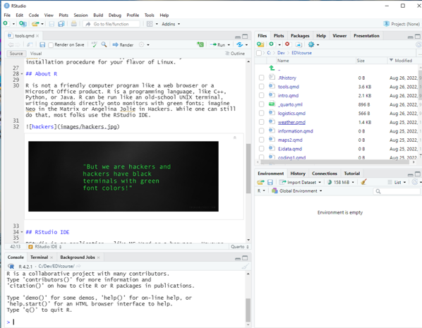
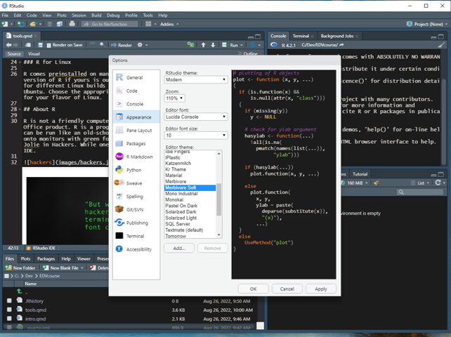

Appendix B — R and RStudio Installation and Overview
R is a free software environment for statistical computing and graphics. Current version 4.6.1 “Happy Hop” was released June 24, 2026. Download here!
RStudio is an integrated development environment (IDE) for R. It is available in open source and commercial editions. I recommend this class use RStudio 2026.08.2 build 200.
These tools will be the primary software used in this course to develop environmental visualizations. Alternate tools/software can be used for assignments and projects, but I will not devote class time to troubleshooting those tools/software. Other IDE options are available, including Positron and Posit Cloud.
B.1 Download and Install R
R is maintained and made available through the web-page at The Comprehensive R Archive Network and a large number of other mirrored servers.
The top of the CRAN web page provides three links for downloading R. Follow the link that describes the OS of your computer: macOS, Windows, or Linux.
B.1.1 R for macOS
To install R on a Mac, click the “Download R for macOS” link. Next, click on the R-4.6.1 package link (or the package link for the most current release of R). Note there are multiple versions depending on the age and type of your laptop; please choose the install version that matches the type you are using. If you aren’t sure whether you have a newer or older mac, please consult with your neighbors in the class. An installer will download to guide you through the installation process. As a starting point, I recommend that most users should choose the default installation settings until they are familiar with R.
B.1.2 R for Windows
To install R on Windows, click the “Download R for Windows” link. Next, click on the install R for the first time link which contains base R. Then click on the link that says Download R-4.6.1 for Windows. A win.exe file will be downloaded to your downloads folder. Open that file after it downloads and follow the installation process. As a starting point, I recommend that most users should choose the default installation settings until they are familiar with R.
B.1.3 R for Linux
R comes preinstalled on many Linux systems, but update to the newest version of R if yours is out of date. The CRAN website provides files for different Linux builds including Debian, Fedora, Redhat, Suse, and Ubuntu. Choose the appropriate directory and the installation procedure for your flavor of Linux.
B.2 About R
R is not a friendly computer program like a web browser. R is a programming language, like C++, Python, or Java. R can be run as a UNIX terminal, writing commands directly onto monitors with green fonts. Imagine the Matrix or Jolie in Hackers. While one can still do that, most folks use the RStudio IDE.

B.3 RStudio IDE
RStudio is an application - like MS Word or a browser. However, Rstudio is an app that helps you write in “R”, not English. It is a foreign language (unless you know it already). And just like any language, R has its own syntax, grammar, and vocabulary. It takes training and time to learn R.
We will use RStudio in this course because its features makes using R easier. Also, the RStudio interface looks about the same for different operating systems, which will help me because I am a Windows user and I’ve observed that most 5C students tend to lean towards macOS.
Download RStudio desktop here - I recommend the free open source version. Make sure to pick the version that is appropriate for your OS. Then follow the installation instructions.
Once installed, RStudio can be opened like any other program or app on your computer; usually just click on the icon on the desktop. When you open it, it should look something like Figure D.1.

Here, there are up to four separate windows or “Panels”.
- The source panel is top-left and this is basically a text editor where you type R code or regular text. Code here gets colored and looks different if it is doing various R things. More on this later. Code doesn’t get immediately executed here; it is more like a holding place for writing/testing/debugging bigger “scripts” or programs.
- The console/terminal is bottom-left. The terminal is the 1980s window that does commands directly. Type print(‘Hello World’), press enter/return, and you’ve written some code. This console is what R would look like if you ran it without RStudio.
- The top-right is the file manager panel. It shows files in your directory, plots, packages, and help files.
- The bottom-right is the programming environment. It contains things you’ve loaded or coded. Right now it should be empty because you’ve done neither.
Of course all of these can be moved around to match how you like to set it up. And I need a different color-scheme than the ugly default.
Select the Tools menu, followed by Global Options in the dropdown Tools menu. Navigate to appearance and you should be able to alter the color scheme to something more your style. My preferred style is Merbivore Soft as shown in Figure B.2.

Even if you use RStudio, you’ll still need to download R to your computer (or use R and RStudio cloud versions). RStudio helps you use the version of R that lives on your computer, but it doesn’t come with a version of R on its own.
I recommend downloading R and RStudio for compatibility, but the RStudio Cloud does exist and does mostly the same thing. I will be less helpful at supporting the Cloud version for this class.
In this class, I will be testing out web assembly live versions that allow executable code within the browser. This will remove version control and package issues, since it will live within the browser when posted. Check each coding lesson for Noodle Zone areas to work within the browser if your code is not working on your local machine.